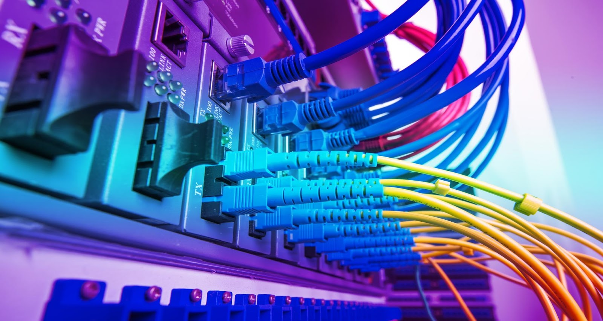

Dans les technologies de l’information, un réseau est défini par la mise en relation d’au moins deux systèmes informatiques au moyen d’un câble ou sans fil, par liaison radio. Le réseau le plus basique comporte deux ordinateurs reliés par un câble. On parle aussi dans ce cas de réseau peer-to-peer (P2P) ou en français pair à pair. Ce genre de réseau n’a pas de hiérarchie : les deux participants sont au même niveau. Chaque ordinateur a accès aux données de l’autre et ils peuvent partager des ressources, comme un disque de stockage, des programmes ou des périphériques (imprimante, etc.). Les réseaux modernes sont un peu plus complexes en général et comportent bien plus que deux ordinateurs. Pour les systèmes à plus de dix participants, on utilise habituellement une configuration de type client/serveur. Dans ce modèle, un ordinateur agissant comme point de commutation central (serveur) met ses ressources à disposition des autres participants au réseau (clients).
La fonction principale d’un réseau est de fournir aux participants une plateforme pour l’échange de données et l’utilisation commune des ressources. Cette fonction revêt une importance cruciale, à tel point qu’on aurait aujourd’hui beaucoup de peine à imaginer notre quotidien et le monde du travail actuel sans l’existence des réseaux. Voici un exemple concret. Dans un bureau, chaque poste de travail a son propre ordinateur. Sans mise en réseau des ordinateurs, il serait très compliqué pour une équipe de collaborer sur un projet, car il n’y aurait pas d’espace commun où partager et déposer des documents et informations numériques, et les collaborateurs ne pourraient pas utiliser certains programmes ensemble comme ils en ont l’habitude.
Il existe plusieurs types de réseaux, selon l’étendue, le découpage, les relations entre les équipements, etc. Ainsi on trouve plusieurs catégories et classifications des réseaux comme le LAN, MAN, WAN, GAN et bien d’autres.
